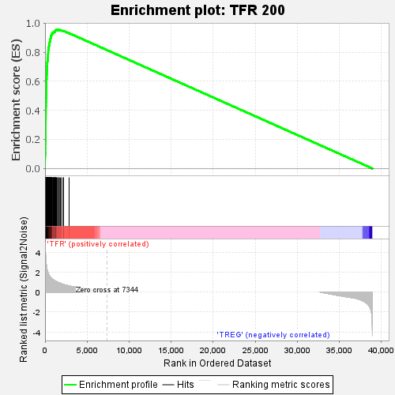
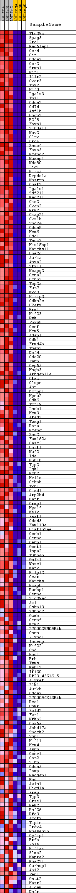
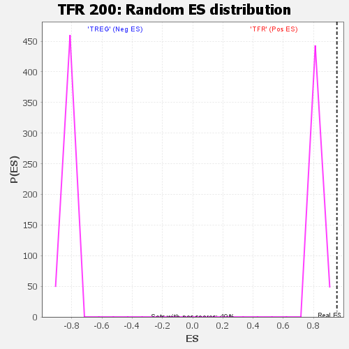

| | | Dataset | tfr_vs_treg_vs_treg.tfr_vs_treg_cls.cls#TFR_versus_TREG |
| Phenotype | tfr_vs_treg_cls.cls#TFR_versus_TREG |
| Upregulated in class | TFR |
| GeneSet | TFR 200 |
| Enrichment Score (ES) | 0.95419866 |
| Normalized Enrichment Score (NES) | 1.1573288 |
| Nominal p-value | 0.0 |
| FDR q-value | 0.09979633 |
| FWER p-Value | 0.049 |
Table: GSEA Results Summary

Fig 1: Enrichment plot: TFR 200
Profile of the Running ES Score & Positions of GeneSet Members on the Rank Ordered List
| SYMBOL | TITLE | RANK IN GENE LIST | RANK METRIC SCORE | RUNNING ES | CORE ENRICHMENT | | 1 | Ttc39c | na | 0 | 4.919 | 0.0100 | Yes |
| 2 | Spag5 | na | 1 | 4.906 | 0.0200 | Yes |
| 3 | Prc1 | na | 2 | 4.892 | 0.0299 | Yes |
| 4 | Rad51ap1 | na | 3 | 4.877 | 0.0398 | Yes |
| 5 | Ccr4 | na | 4 | 4.845 | 0.0497 | Yes |
| 6 | Cit | na | 5 | 4.820 | 0.0595 | Yes |
| 7 | Cdca3 | na | 8 | 4.753 | 0.0691 | Yes |
| 8 | Ccr2 | na | 11 | 4.704 | 0.0786 | Yes |
| 9 | Stmn1 | na | 15 | 4.637 | 0.0879 | Yes |
| 10 | Kif15 | na | 19 | 4.565 | 0.0971 | Yes |
| 11 | Il1r2 | na | 29 | 4.332 | 0.1057 | Yes |
| 12 | Cxcr3 | na | 33 | 4.218 | 0.1142 | Yes |
| 13 | Tpx2 | na | 35 | 4.211 | 0.1228 | Yes |
| 14 | H1f0 | na | 36 | 4.211 | 0.1313 | Yes |
| 15 | Lgals3 | na | 38 | 4.185 | 0.1398 | Yes |
| 16 | Tpi1 | na | 41 | 4.156 | 0.1482 | Yes |
| 17 | Cdca2 | na | 42 | 4.127 | 0.1566 | Yes |
| 18 | Cd74 | na | 43 | 4.072 | 0.1649 | Yes |
| 19 | Asf1b | na | 46 | 4.035 | 0.1730 | Yes |
| 20 | Hmgb2 | na | 48 | 4.023 | 0.1812 | Yes |
| 21 | E2f8 | na | 49 | 4.020 | 0.1893 | Yes |
| 22 | Foxm1 | na | 56 | 3.919 | 0.1971 | Yes |
| 23 | S100a11 | na | 57 | 3.871 | 0.2050 | Yes |
| 24 | Nav2 | na | 58 | 3.854 | 0.2128 | Yes |
| 25 | Glrx | na | 60 | 3.824 | 0.2206 | Yes |
| 26 | Orc6 | na | 63 | 3.742 | 0.2281 | Yes |
| 27 | Smco4 | na | 68 | 3.697 | 0.2356 | Yes |
| 28 | Fbxo5 | na | 69 | 3.692 | 0.2431 | Yes |
| 29 | Ncapd2 | na | 71 | 3.608 | 0.2504 | Yes |
| 30 | Nusap1 | na | 73 | 3.599 | 0.2577 | Yes |
| 31 | Ndc80 | na | 74 | 3.598 | 0.2650 | Yes |
| 32 | Lig1 | na | 80 | 3.499 | 0.2720 | Yes |
| 33 | Birc5 | na | 82 | 3.478 | 0.2790 | Yes |
| 34 | Depdc1a | na | 83 | 3.468 | 0.2861 | Yes |
| 35 | Knstrn | na | 84 | 3.420 | 0.2930 | Yes |
| 36 | Chst2 | na | 85 | 3.418 | 0.3000 | Yes |
| 37 | Lgals1 | na | 86 | 3.361 | 0.3068 | Yes |
| 38 | Sdf2l1 | na | 87 | 3.351 | 0.3136 | Yes |
| 39 | Mad2l1 | na | 89 | 3.346 | 0.3204 | Yes |
| 40 | Cks2 | na | 90 | 3.345 | 0.3272 | Yes |
| 41 | Ckap2 | na | 92 | 3.317 | 0.3339 | Yes |
| 42 | Rrm2 | na | 93 | 3.299 | 0.3406 | Yes |
| 43 | Ckap2l | na | 97 | 3.284 | 0.3472 | Yes |
| 44 | Cks1b | na | 98 | 3.259 | 0.3538 | Yes |
| 45 | Spc24 | na | 100 | 3.249 | 0.3604 | Yes |
| 46 | Cdca8 | na | 101 | 3.246 | 0.3670 | Yes |
| 47 | Mcm6 | na | 102 | 3.222 | 0.3735 | Yes |
| 48 | Odc1 | na | 104 | 3.199 | 0.3800 | Yes |
| 49 | Tacc3 | na | 106 | 3.193 | 0.3865 | Yes |
| 50 | Mis18bp1 | na | 107 | 3.186 | 0.3930 | Yes |
| 51 | Marcksl1 | na | 108 | 3.177 | 0.3994 | Yes |
| 52 | Ube2c | na | 109 | 3.172 | 0.4059 | Yes |
| 53 | Aurka | na | 110 | 3.158 | 0.4123 | Yes |
| 54 | Anxa2 | na | 111 | 3.151 | 0.4187 | Yes |
| 55 | Stx11 | na | 113 | 3.145 | 0.4251 | Yes |
| 56 | Ncapg2 | na | 116 | 3.112 | 0.4313 | Yes |
| 57 | Ccna2 | na | 119 | 3.093 | 0.4376 | Yes |
| 58 | Ccnb2 | na | 120 | 3.077 | 0.4438 | Yes |
| 59 | Top2a | na | 122 | 3.038 | 0.4500 | Yes |
| 60 | Fut7 | na | 123 | 3.029 | 0.4561 | Yes |
| 61 | Mxd3 | na | 130 | 2.985 | 0.4620 | Yes |
| 62 | Hirip3 | na | 132 | 2.955 | 0.4680 | Yes |
| 63 | Cdkn2c | na | 133 | 2.950 | 0.4740 | Yes |
| 64 | H2afx | na | 134 | 2.945 | 0.4800 | Yes |
| 65 | Rrm1 | na | 136 | 2.904 | 0.4859 | Yes |
| 66 | Kif23 | na | 145 | 2.837 | 0.4914 | Yes |
| 67 | Ryk | na | 146 | 2.833 | 0.4972 | Yes |
| 68 | Fbxw8 | na | 147 | 2.806 | 0.5029 | Yes |
| 69 | Ccnf | na | 152 | 2.784 | 0.5085 | Yes |
| 70 | Mcm5 | na | 155 | 2.768 | 0.5140 | Yes |
| 71 | Adap1 | na | 156 | 2.763 | 0.5197 | Yes |
| 72 | Cdk1 | na | 158 | 2.730 | 0.5252 | Yes |
| 73 | Frmd4b | na | 160 | 2.719 | 0.5307 | Yes |
| 74 | Tmem2 | na | 161 | 2.703 | 0.5362 | Yes |
| 75 | Dbf4 | na | 162 | 2.680 | 0.5416 | Yes |
| 76 | Cdc20 | na | 163 | 2.671 | 0.5471 | Yes |
| 77 | Fabp5 | na | 164 | 2.669 | 0.5525 | Yes |
| 78 | Cep55 | na | 165 | 2.631 | 0.5578 | Yes |
| 79 | Hmgb3 | na | 167 | 2.628 | 0.5631 | Yes |
| 80 | Arhgap11a | na | 168 | 2.626 | 0.5685 | Yes |
| 81 | Ctsz | na | 173 | 2.606 | 0.5737 | Yes |
| 82 | Clspn | na | 175 | 2.580 | 0.5789 | Yes |
| 83 | Ahr | na | 176 | 2.579 | 0.5841 | Yes |
| 84 | Dctpp1 | na | 178 | 2.562 | 0.5893 | Yes |
| 85 | Kpna2 | na | 179 | 2.549 | 0.5945 | Yes |
| 86 | Cdk6 | na | 180 | 2.543 | 0.5997 | Yes |
| 87 | Tcf19 | na | 182 | 2.531 | 0.6048 | Yes |
| 88 | Lmnb1 | na | 184 | 2.515 | 0.6099 | Yes |
| 89 | Mcm3 | na | 190 | 2.489 | 0.6148 | Yes |
| 90 | Atad2 | na | 198 | 2.425 | 0.6196 | Yes |
| 91 | Twsg1 | na | 200 | 2.422 | 0.6245 | Yes |
| 92 | Rora | na | 201 | 2.421 | 0.6294 | Yes |
| 93 | Ncapg | na | 202 | 2.419 | 0.6343 | Yes |
| 94 | Smc2 | na | 204 | 2.390 | 0.6391 | Yes |
| 95 | Fam162a | na | 210 | 2.370 | 0.6438 | Yes |
| 96 | Casc5 | na | 212 | 2.357 | 0.6486 | Yes |
| 97 | Uhrf1 | na | 213 | 2.356 | 0.6534 | Yes |
| 98 | Nuf2 | na | 218 | 2.340 | 0.6580 | Yes |
| 99 | Ide | na | 220 | 2.334 | 0.6627 | Yes |
| 100 | Bub1b | na | 223 | 2.325 | 0.6674 | Yes |
| 101 | Tjp2 | na | 225 | 2.310 | 0.6721 | Yes |
| 102 | Pgk1 | na | 232 | 2.278 | 0.6766 | Yes |
| 103 | Ezh2 | na | 234 | 2.275 | 0.6812 | Yes |
| 104 | Hells | na | 235 | 2.271 | 0.6858 | Yes |
| 105 | Cebpb | na | 236 | 2.262 | 0.6904 | Yes |
| 106 | Txn1 | na | 238 | 2.255 | 0.6949 | Yes |
| 107 | Cisd1 | na | 242 | 2.231 | 0.6994 | Yes |
| 108 | Atp2b4 | na | 250 | 2.206 | 0.7037 | Yes |
| 109 | Batf | na | 256 | 2.198 | 0.7080 | Yes |
| 110 | Crmp1 | na | 258 | 2.195 | 0.7125 | Yes |
| 111 | Myo1f | na | 262 | 2.185 | 0.7168 | Yes |
| 112 | Melk | na | 263 | 2.184 | 0.7213 | Yes |
| 113 | Psat1 | na | 265 | 2.175 | 0.7257 | Yes |
| 114 | Cdc45 | na | 267 | 2.169 | 0.7301 | Yes |
| 115 | Fam110a | na | 277 | 2.151 | 0.7342 | Yes |
| 116 | Hist1h2ae | na | 291 | 2.103 | 0.7381 | Yes |
| 117 | Ccnb1 | na | 306 | 2.052 | 0.7419 | Yes |
| 118 | Cenpe | na | 313 | 2.045 | 0.7459 | Yes |
| 119 | Cenpl | na | 319 | 2.031 | 0.7499 | Yes |
| 120 | Gcnt1 | na | 322 | 2.022 | 0.7540 | Yes |
| 121 | Impa2 | na | 323 | 2.021 | 0.7581 | Yes |
| 122 | Tubb4b | na | 330 | 1.997 | 0.7620 | Yes |
| 123 | Galk1 | na | 333 | 1.995 | 0.7660 | Yes |
| 124 | Whsc1 | na | 348 | 1.953 | 0.7696 | Yes |
| 125 | Matk | na | 350 | 1.950 | 0.7736 | Yes |
| 126 | Rilpl2 | na | 351 | 1.948 | 0.7775 | Yes |
| 127 | Gcat | na | 353 | 1.947 | 0.7815 | Yes |
| 128 | Marcks | na | 354 | 1.947 | 0.7854 | Yes |
| 129 | Ncaph | na | 364 | 1.923 | 0.7891 | Yes |
| 130 | Ranbp1 | na | 374 | 1.905 | 0.7927 | Yes |
| 131 | Cenpa | na | 375 | 1.904 | 0.7966 | Yes |
| 132 | Slc39a4 | na | 378 | 1.901 | 0.8004 | Yes |
| 133 | Axl | na | 379 | 1.899 | 0.8043 | Yes |
| 134 | Osbpl3 | na | 382 | 1.897 | 0.8081 | Yes |
| 135 | Zdhhc2 | na | 387 | 1.884 | 0.8118 | Yes |
| 136 | Gzmb | na | 398 | 1.846 | 0.8153 | Yes |
| 137 | Cenpf | na | 405 | 1.825 | 0.8189 | Yes |
| 138 | Mcm2 | na | 408 | 1.814 | 0.8225 | Yes |
| 139 | 2700029M09Rik | na | 412 | 1.809 | 0.8261 | Yes |
| 140 | Gmnn | na | 440 | 1.760 | 0.8290 | Yes |
| 141 | Plxnd1 | na | 443 | 1.758 | 0.8325 | Yes |
| 142 | Incenp | na | 449 | 1.751 | 0.8359 | Yes |
| 143 | Kif22 | na | 452 | 1.745 | 0.8394 | Yes |
| 144 | Cpd | na | 473 | 1.702 | 0.8424 | Yes |
| 145 | Ehd1 | na | 479 | 1.696 | 0.8457 | Yes |
| 146 | Erh | na | 491 | 1.677 | 0.8488 | Yes |
| 147 | Tyms | na | 525 | 1.640 | 0.8513 | Yes |
| 148 | Mybl2 | na | 528 | 1.638 | 0.8546 | Yes |
| 149 | Ifi30 | na | 533 | 1.633 | 0.8578 | Yes |
| 150 | RP23-45G16.5 | na | 534 | 1.633 | 0.8611 | Yes |
| 151 | Alyref | na | 540 | 1.625 | 0.8643 | Yes |
| 152 | Plk1 | na | 541 | 1.624 | 0.8676 | Yes |
| 153 | Aurkb | na | 569 | 1.582 | 0.8701 | Yes |
| 154 | Cdca7 | na | 579 | 1.572 | 0.8731 | Yes |
| 155 | 2700094K13Rik | na | 585 | 1.565 | 0.8761 | Yes |
| 156 | Rcc1 | na | 591 | 1.561 | 0.8792 | Yes |
| 157 | Hmmr | na | 594 | 1.561 | 0.8823 | Yes |
| 158 | Pold2 | na | 603 | 1.552 | 0.8852 | Yes |
| 159 | Fzr1 | na | 614 | 1.540 | 0.8881 | Yes |
| 160 | Nfkb2 | na | 635 | 1.521 | 0.8907 | Yes |
| 161 | Cox5a | na | 654 | 1.505 | 0.8933 | Yes |
| 162 | Abhd17a | na | 662 | 1.501 | 0.8961 | Yes |
| 163 | Spock2 | na | 670 | 1.498 | 0.8990 | Yes |
| 164 | Vmp1 | na | 694 | 1.474 | 0.9014 | Yes |
| 165 | Kif11 | na | 698 | 1.468 | 0.9043 | Yes |
| 166 | Mcm4 | na | 700 | 1.468 | 0.9073 | Yes |
| 167 | Aspm | na | 703 | 1.465 | 0.9102 | Yes |
| 168 | Ccne1 | na | 708 | 1.459 | 0.9131 | Yes |
| 169 | Got2 | na | 737 | 1.425 | 0.9152 | Yes |
| 170 | Slbp | na | 772 | 1.390 | 0.9172 | Yes |
| 171 | Cdca5 | na | 781 | 1.384 | 0.9198 | Yes |
| 172 | Pomp | na | 800 | 1.369 | 0.9221 | Yes |
| 173 | Racgap1 | na | 822 | 1.355 | 0.9243 | Yes |
| 174 | Mmd | na | 824 | 1.352 | 0.9270 | Yes |
| 175 | Azin1 | na | 839 | 1.340 | 0.9294 | Yes |
| 176 | Higd1a | na | 859 | 1.327 | 0.9316 | Yes |
| 177 | Prep | na | 958 | 1.258 | 0.9316 | Yes |
| 178 | Tjp3 | na | 969 | 1.253 | 0.9339 | Yes |
| 179 | Gtse1 | na | 1023 | 1.220 | 0.9350 | Yes |
| 180 | Nek2 | na | 1043 | 1.205 | 0.9370 | Yes |
| 181 | Rnf26 | na | 1080 | 1.183 | 0.9385 | Yes |
| 182 | Rfc3 | na | 1093 | 1.173 | 0.9405 | Yes |
| 183 | Acot7 | na | 1136 | 1.150 | 0.9418 | Yes |
| 184 | Tipin | na | 1198 | 1.118 | 0.9425 | Yes |
| 185 | Prdx4 | na | 1202 | 1.116 | 0.9447 | Yes |
| 186 | Rnaseh2b | na | 1228 | 1.106 | 0.9463 | Yes |
| 187 | Cyfip1 | na | 1235 | 1.101 | 0.9484 | Yes |
| 188 | Etfb | na | 1260 | 1.089 | 0.9500 | Yes |
| 189 | Pole | na | 1265 | 1.088 | 0.9521 | Yes |
| 190 | Eif1ax | na | 1333 | 1.061 | 0.9525 | Yes |
| 191 | Slmo2 | na | 1356 | 1.052 | 0.9541 | Yes |
| 192 | Mapre2 | na | 1433 | 1.020 | 0.9542 | Yes |
| 193 | Mms22l | na | 1511 | 0.992 | 0.9542 | Yes |
| 194 | Carhsp1 | na | 1655 | 0.941 | 0.9524 | No |
| 195 | Abi2 | na | 1699 | 0.925 | 0.9532 | No |
| 196 | Fen1 | na | 1828 | 0.888 | 0.9517 | No |
| 197 | Gstt2 | na | 1969 | 0.840 | 0.9498 | No |
| 198 | Mast2 | na | 2172 | 0.785 | 0.9462 | No |
| 199 | Alcam | na | 2205 | 0.775 | 0.9469 | No |
| 200 | Dhfr | na | 2861 | 0.621 | 0.9313 | No |
Table: GSEA details [plain text format]

Fig 2: TFR 200
Blue-Pink O' Gram in the Space of the Analyzed GeneSet

Fig 3: TFR 200: Random ES distribution
Gene set null distribution of ES for TFR 200